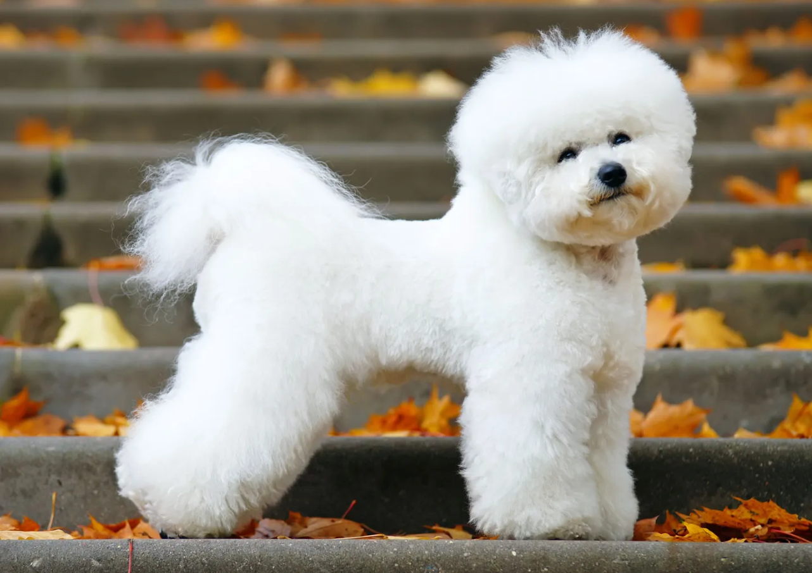

BICHON
Weight:
7-12 lbs.
Height :
12 in.
Length:
Medium.
Color:
White with shadings of cream, buff or apricot Coat.
Longevity:
12 – 15 yrs.
Bichon personality
The bichon frisé is considered a great all-around pet that is a playful yet gentle dog. Bichons get along well with other pets. They are generally considered very good with kids. In one survey, they ranked high on snapping at children, but caution is in order anytime dogs and small children are together. In the same survey, they were found easy to housebreak and train but some owners disagree with the easy housebreaking label.
What to expect
Bichons are active dogs, but because they are small, they don't need too much room to romp and are suitable for apartment living. Bichons are not known for barking, which is a real plus for city dwellers, but don't count on them to guard your home, either. They do require considerable time for coat care. They need grooming, bathing and trimming on a regular basis. Bichons are one of a few breeds recommended for people with allergies who want a dog, but beware. Some people with mild allergies may have fewer allergy problems with a bichon compared with other dogs, but there are no guarantees. Consult with your allergist and spend considerable time around adult bichons before deciding to live with one.
History of the Bichon
The bichon frise (pronounced bee-SHON free-ZAY) is thought to be a descendant of the water spaniel and was known in the Mediterranean area as far back as the Middle Ages. Some historians believe the breed actually originated in the Canary Islands and was brought to Europe by sailors. Bichons have long been recognized as good companion dogs, mostly because of their cheerful, even temperaments. They were quite popular with European nobility, in the English court during Henry II's reign, and were even included in paintings by Goya. By the 19th century, their popularity had declined. They were street dogs and some were used in circus troupes. Their popularity rose again after World War I. The breed was first brought to the United States in 1956 by a French family named Picault. The breed was recognized in 1973 by the American Kennel Club as a non-sporting dog. In recent years, bichons have become more popular as people learned about the desirable traits of the breed.